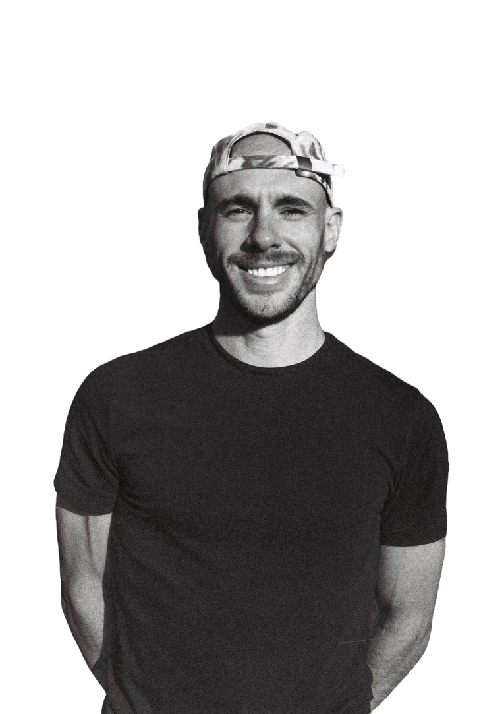

Director and cinematographer.
Reach out

I work across documentary and commercial film with 13 years behind the camera on five continents. My work runs on access, trust, and the patience to let a story surface on its own terms.
Reach out

I work across documentary and commercial film with 13 years behind the camera on five continents. My work runs on access, trust, and the patience to let a story surface on its own terms.